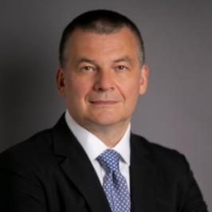

Meet the team
A small team pairing decades of resilience practice with economic intelligence and the engineering to turn a proprietary methodology and framework into a global resilience advisory practice and resilience intelligence suite.
Kelly brings three decades of global experience advising leaders, boards and governments through economic transformation, strategic resilience and complex change. She shapes the thinking behind Resilience Nexus and the leadership judgement at the heart of its work.
Peter brings thirty-five years as an entrepreneur, marketer and digital technology expert, building agencies, launching disruptive start-ups and advising global brands. He channels this network and instinct for opportunity into new ventures and partnerships for Resilience Nexus and its clients.
Chris brings thirty years leading growth businesses in wireless, internet and cloud, including CEO of BT Openzone Wi-Fi and senior roles across BT and Ericsson worldwide. He advises family offices on technology innovation, deeply embedded in the Cambridge tech and investment ecosystem.
Simon has built AI-powered products since 1996, when he co-founded MapQuest, the internet's first mass-market navigation product. Over 25 years in digital transformation across the US and Europe, he holds a BA in Computing & AI from Sussex and an MBA from Harvard Business School.

Thomas brings thirty years advising boards and executives on strategy, asset management and corporate banking, including senior leadership roles at global consultancies and a major bank. He invests in early-stage and growth businesses, deeply embedded in Ivy League angel networks and non-executive director circles across the US and Europe.